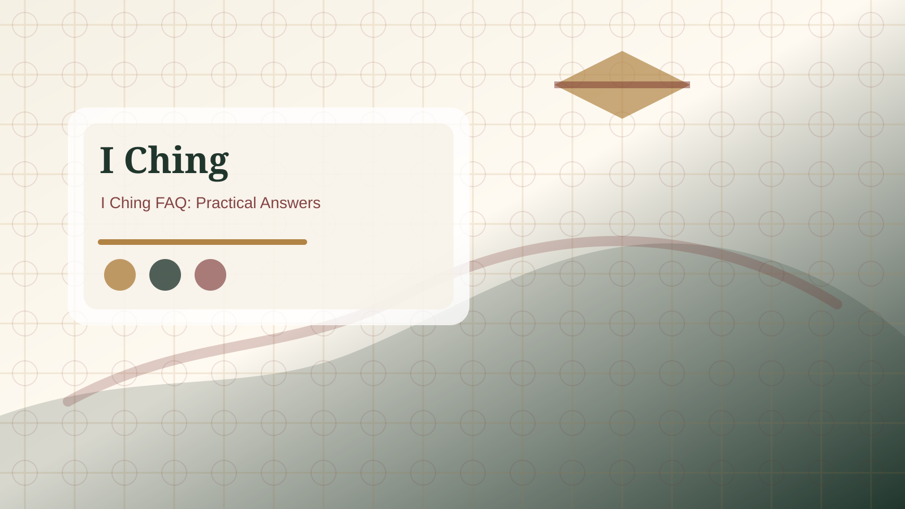

Is the I Ching fortune telling?
The I Ching is often used for divination, but this site treats it as structured reflection rather than guaranteed fortune telling.

Short answer
The I Ching can be used in fortune-telling contexts, but that is not the approach used here. This site presents it as a cultural and reflective system. A reading names patterns such as waiting, conflict, return, progress, limitation, or breakthrough. Those patterns can help a reader think more carefully, but they should not be treated as a guaranteed script for the future.
Reflection instead of prediction
A responsible reading asks what the result helps you notice. It does not claim that one event must happen. The primary hexagram describes the current pattern around the question. Changing lines show movement or pressure. The relating hexagram suggests a possible direction if the active pressure develops. None of those layers removes personal responsibility.
Concrete example
If a reader asks about a relationship and receives a hexagram about conflict, the useful response is not to announce that the relationship will fail. A better response is to ask where communication is tense, what facts are disputed, what boundary is missing, and whether a calmer conversation is possible. The reading becomes a mirror for attention, not a dramatic verdict.
How this site uses the tradition
The site keeps traditional terms because they matter, but it translates them into plain English and practical use. Paid reports follow the same boundary. They can organize a reading and suggest careful next steps, but they do not promise certainty, psychic knowledge, or professional advice.